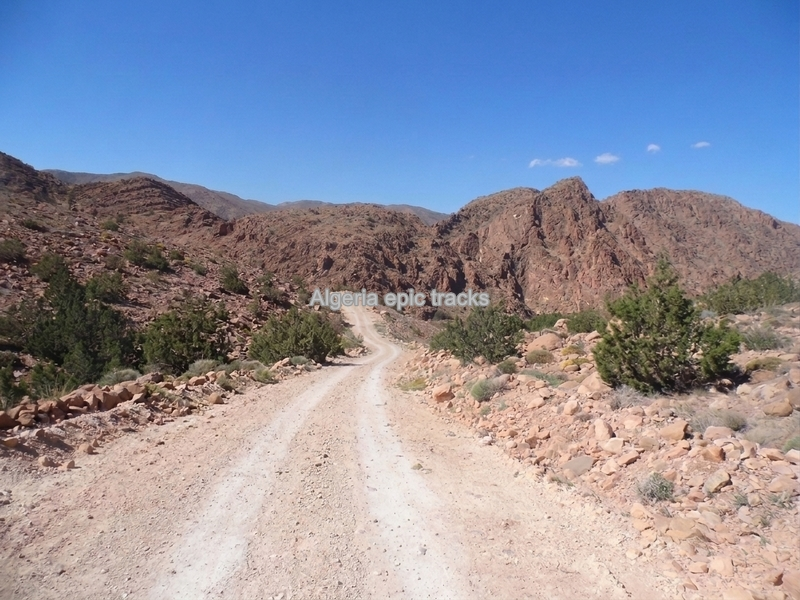
Pistes moto
Découvrez nos pistes sélectionnées pour vivre une véritable aventure à travers l'Algérie.
 Algérie :
+213 5 62 34 44 72
France :
+33 6 28 03 65 24
Algérie :
+213 5 62 34 44 72
France :
+33 6 28 03 65 24
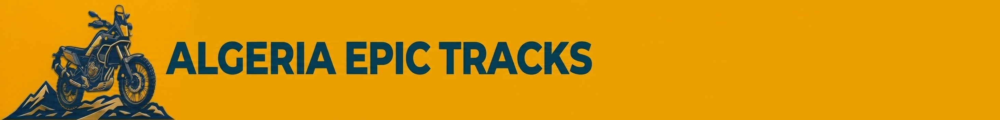
Découvrez l'Algérie à moto, de la Méditerranée aux Aurès, des Hauts-Plateaux jusqu'au Sahara à travers les routes et les pistes les plus épiques.
Partez à la découverte de l'Algérie au guidon de votre moto. De la côte méditerranéenne aux montagnes de l'Atlas et jusqu'aux immensités du Sahara, découvrez nos itinéraires par route ou par pistes.

Découvrez nos pistes sélectionnées pour vivre une véritable aventure à travers l'Algérie.
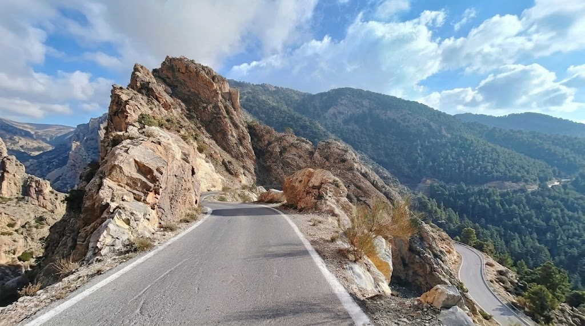
Nos itinéraires sont soigneusement sélectionnés pour la beauté de leurs paysages et les émotions qu'ils procurent.
Des routes sinueuses aux panoramas grandioses, chaque parcours est une invitation à explorer l'Algérie.
Choisissez un circuit pour découvrir son programme et ses informations pratiques.
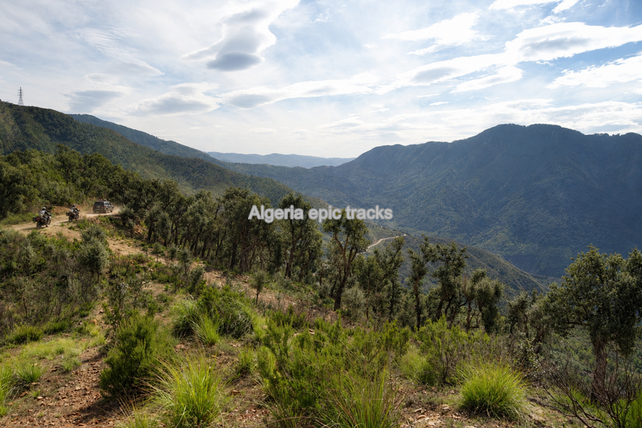
Un itinéraire au cœur des reliefs des Babors, entre pistes de montagne et paysages de Petite Kabylie. Départ prévu depuis la région de Jijel.
Nos itinéraires sont soigneusement sélectionnés pour la beauté de leurs paysages et les émotions qu'ils procurent.
Des routes sinueuses aux panoramas grandioses, chaque parcours est une invitation à explorer l'Algérie.
Choisissez un circuit pour découvrir son programme et ses informations pratiques.
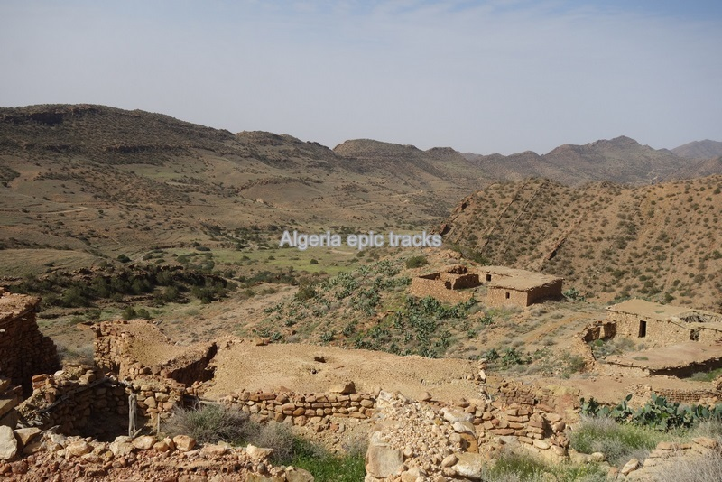
Découvrez les paysages et les routes de l'Est algérien, avec un passage par la région de Constantine.
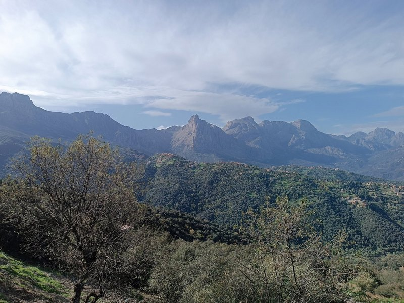
Un itinéraire panoramique à travers les reliefs et les paysages de Kabylie, pensé pour profiter des routes de montagne.
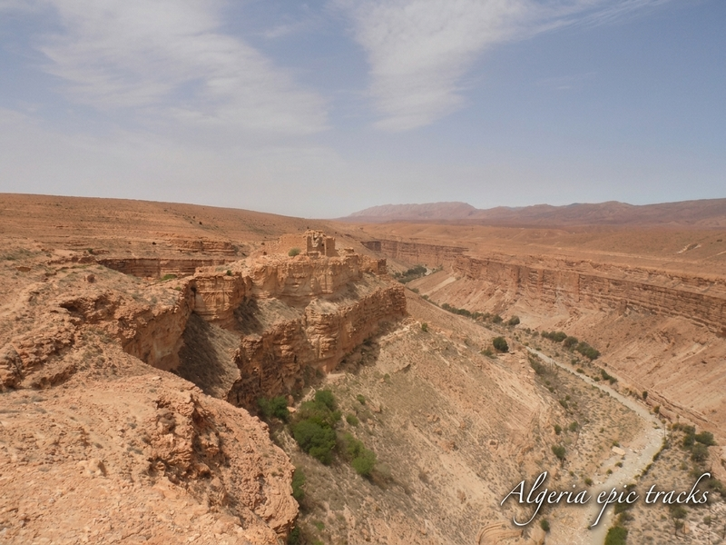
Un circuit reliant les reliefs des Aurès aux paysages sahariens. Le programme détaillé sera complété ultérieurement.
Une équipe passionnée par la moto, les grands espaces et la découverte de l'Algérie.
Originaire de Petite Kabylie, montagnard de père en fils, il met à votre service son expérience sur les sentiers et les pistes. Passionné par son pays et ses traditions, il vous invite à découvrir les paysages et la culture de l'Algérie.
Passionné de mécanique et de moto depuis toujours, il veille à l'entretien des motos et intervient en cas de panne ou de difficulté mécanique.
Fondateur d'Algeria Epic Tracks et concepteur des circuits, passionné de sport nature et de randonnée pédestre et motorisée.
Tous nos circuits motos sont également proposés en 4x4. À la demande de nos clients, nous avons conçu cette offre pour permettre à chacun de vivre l'aventure en famille ou entre amis, de partager des paysages grandioses et de profiter de notre expertise.
| Tarifs par Personne | ||||
|---|---|---|---|---|
| En fonction du nombre d'occupants dans le 4x4 | ||||
| Nb personnes/4x4 -> | 01 Pers | 02 Pers | 03 Pers | 04 Pers |
| 2jours | 1000,00 | 600,00 | 400,00 | 300,00 |
| 3jours | 1300,00 | 800,00 | 600,00 | 500,00 |
| 4jours | 1600,00 | 1000,00 | 800,00 | 700,00 |
| 5 jours | 1900,00 | 1200,00 | 1000,00 | 900,00 |
| 6 jours | 2200,00 | 1400,00 | 1200,00 | 1100,00 |
| 7 jours | 2500,00 | 1600,00 | 1400,00 | 1300,00 |
| 8 jours | 2800,00 | 1800,00 | 1600,00 | 1500,00 |
| 9 jours | 3100,00 | 2000,00 | 1800,00 | 1700,00 |
| 10 jours | 3400,00 | 2200,00 | 2000,00 | 1900,00 |
| Compris dans l'offre | Non compris |
|---|---|
| Prise en charge à l'arrivée et au départ et transferts | Assurances annulation et rapatriement |
| Location du 4*4 avec le guide | Frais de visa et vols internationaux |
| Pension complète pendant le circuit | Boissons, pourboires et visites éventuelles |
Trail RK 200
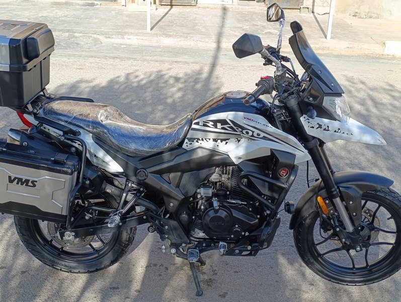
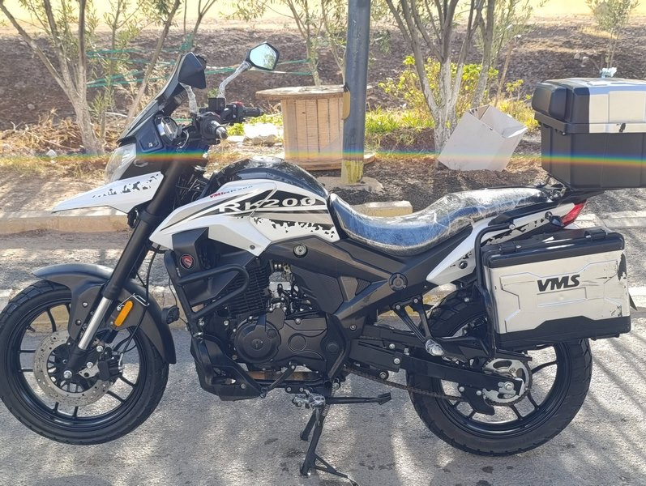
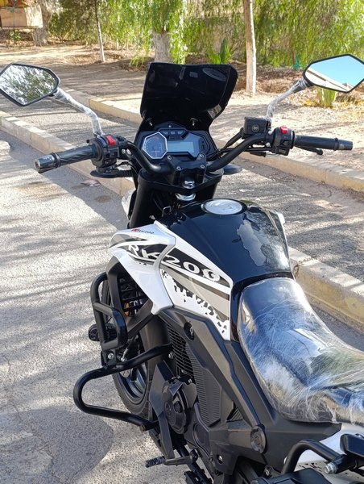
Découvrez les paysages et les routes de l'Est algérien, avec un passage par la région des Aurès.
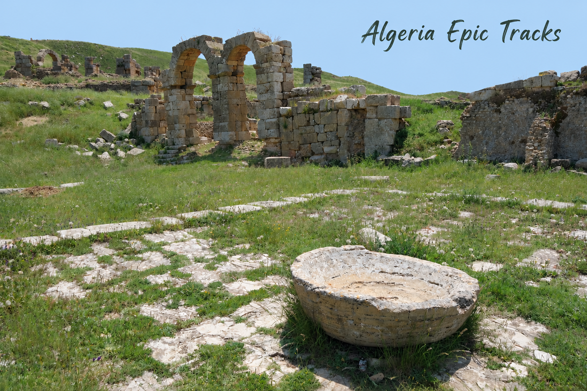
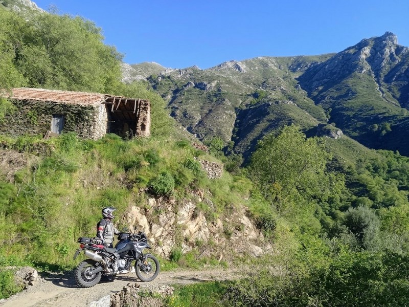
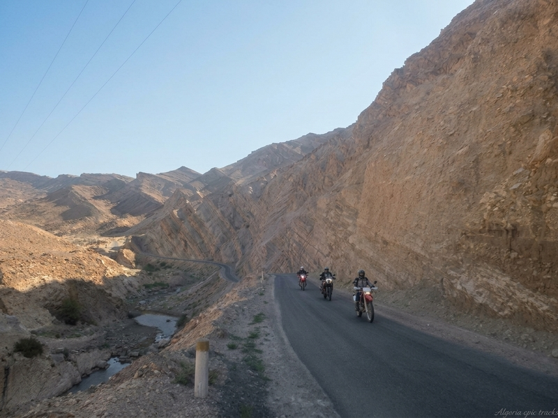
| Au départ de Béjaïa, hors vol | Avec moto | Avec votre moto | Passager ou 4×4 |
|---|---|---|---|
| 10 jours | 2 500 € | 1 500 € | 1 000 € |
| Compris dans l'offre | Non compris |
|---|---|
| Prise en charge à l'arrivée et au départ et transferts | Assurances annulation et rapatriement |
| Location de moto avec assurance RC (option avec moto) | Assurance dommages moto |
| Véhicule d'assistance, transport des bagages, guide et mécanicien | Frais de visa et vols internationaux |
| Pension complète pendant le circuit | Carburant, boissons, pourboires et visites éventuelles |
Cette première étape nous permet de quitter Béjaia et sa large baie pour rejoindre la ville de Jijel. A partir de l'oued agrioun nous abordons la pittoresque route de corniche qui suit le littoral du massif de petite Kabylie.
Les sections de routes rectilignes font place à une succession de plus en plus serrée de virages taillés au bord de la falaise qui nous font penser à certaines routes de falaises du Vercors.
Plusieurs arrets à des points de vues nous permettront d'admirer le formidable paysage de cette corniche.
Nous nous arretons pour cette première nuit dans une ferme de la campagne jijelienne.
Traversée des monts de petite Kabylie pour aller à Djemila.
Nous roulons dans des paysages de collines accidentées et pelées. Sur un plateau bordé de profonds ravins s'etendent les ruines de Djemila qui comptent parmi les plus belles que nous ait léguées l'Antiquité romaine.
Reste de la journée consacrée à la visite de cette ville romaine fondée à la fin du 1er siècle par l'empereur romain Verva.
Nuit à Djemila.
Nous traversons de grandes plaines et collines agricoles pour aller à Constantine, la vielle capitale numide.
Passage par les ruines de Tiddis qui se revelent brusquement comme un ensemble de murailles, de colonnes et d'arcatures etagés à flanc de coteau et dont la magnifique couleur rouge tranche sur le vert parfois jauni de la végétation.
Visite du site de Tiddis dont le sommet de la colline rappelle celui de Constantine avec son plateau entaillé de ravins impressionnants.
Nuit à Constantine.
Journée consacrée à la visite de la ville de Constantine.
Par l'etrangeté de son site, Constantine est l'une des villes commercantes et administratives les plus importantes de l'est algérien, et la seule dont la fonction economique se soit conservée durant plus de deux millénaires.
Visite des ponts emblematiques de la ville et du palais d'Ahmed bey.
Dejeunér dans un restaurant traditionnel de la ville.
Après midi consacrée à la visite du musée national et promenade dans les quartiers historiques de la ville.
Nuit à Constantine.
Nous traversons les grands chotts constantinois qui sont de vastes dépression salines remplis par les eaux de pluie.
Au pied du massif de l'Aurès, sur une haute plaine à 1072m d'altitude s'etend l'immense champs de colonnes et de murs qui constituent le grandiose spectacle des ruines antique de Timgad.
Visite du site de Timgad.
Nuit à Timgad.
Nous grimpons sur les premiers contreforts de l'Aures par le défilé de Foum Bouteb.
La route pittoresque et sinueuse s'élève dans la vallée de l'oued Telha dont le fond cultivé, verdoyant et couvert de prairies fait un contraste frappant avec la masse sombre des sapins et des cèdres qui montent à l'assaut des versants
Après un col à 1578 mètres se revele au sud-est le sommet dénudé du Chelia, point culminant du nord de l'Algérie, qui émerge de ses versants couverts de cèdres.
Nous parvenons à un col à 1740 mètres d'altitude, d'ou l'on jouit d'une très belle vue au sud sur le massif des Aurès.
Nous suivons ensuite l'oued el abiod jusqu'à Ghoufi en passant par les gorges de Tighanimine puis des oasis de montagne.
Diner et nuit dans une maison traditionnelle aurésienne à Ghoufi.
Nous nous rendons aux balcons de Ghoufi d'ou l'on jouit de la meilleure vue d'ensemble de ce site incomparable avec ses villages accrochés à la falaise du canyon prodigieux au fond dusquel s'étend une palmeraie verdoyante.
Au départ de Ghoufi la route vers Biskra se poursuit toujours très sinueuse et accidentée, au profil de montagnes russes, sur un plateau calcaire buriné par l'érosion.
On atteint bientôt un paysage grandiose et stérile, une sorte de cirque rouge au fonds ravinés.
Promenade au canyon de Mchouneche ou l'oued el Abiod apparait alors dans sa sauvage grandeur, le promeneur est écrasé par ces gigantesques masses rocheuses aux parois verticales allant de l'ocre brun au rouge violacé.
La route descend vers le désert et les petites palmeraies de Droh et Chetma annoncent Biskra.
Diner et nuit à Biskra.
Nous traversons les oasis des Zibanes qui jalonnent la route au sud de Biskra.
Visite d'une palmeraie ou est récoltée la célèbre datte algérienne Deglet Nour.
Poursuite à travers une route dans la cuvette du Hodna pour voir une curiosité géologique.
On atteint Bou Saada, cité du bonheur, ou l'on visitera le vieux ksar et le moulin Ferrero.
Diner et nuit dans un gite traditionnel dans la campagne de Bou Saada.
Nous sortons de Bou Saada pour aller visiter les petites dunes de sables en contrefort du Jbel Kenfoud.
Nous traversons le chott du Hodna pour arriver dans un site montagneux à 1000 mètres d'altitude d’une saisissante beauté ou se trouve les ruines de la première capitale des émirs hammadides, fondée en 1007 et démantelée en 1152, qui nous restituent l’image authentique d’une ville musulmane fortifiée.
Visite de la Kalaa.
Nous pursuivons la route en traversant les monts du Hodna pour arriver à la station thermale Hammam de oued Boussalam nichée dans une vallée verdoyante au cœur de paysages montagneux et escarpés.
Bain et détente dans les sources chaudes.
Diner et nuit sur le site.
Petite promenade le matin dans les gorges de Hammam oued Boussalam.
Nous continuons par la traversée des gorges de Chabet El Akra (le ravin de la mort), récemment réhabilitées . Ces gorges longues de 7 kilomètres, taillées dans les masses rocheuses des montagnes des Babors offre un invraisemblable amoncellement d'aretes dechiquetées et de rochers abruptes.
Retour à Béjaia.
Des routes sinueuses et des panoramas de montagne pour découvrir la diversité des paysages de Kabylie.
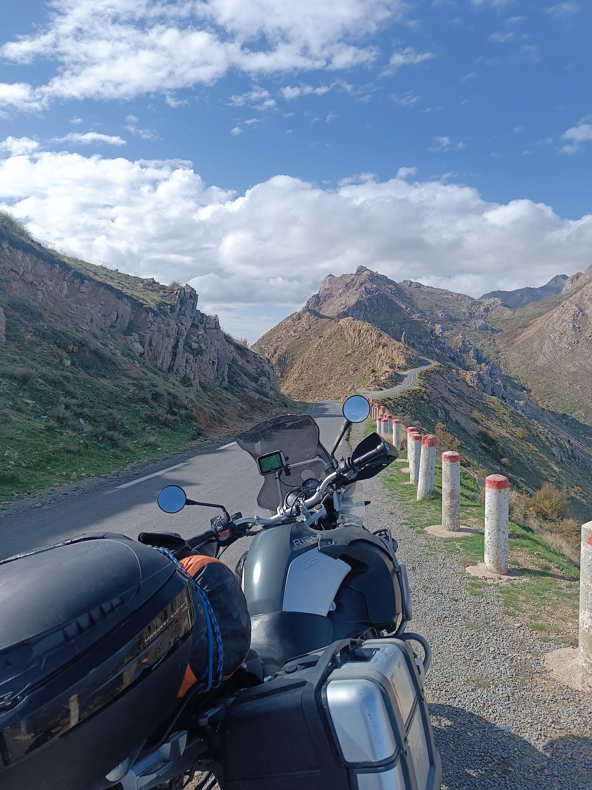
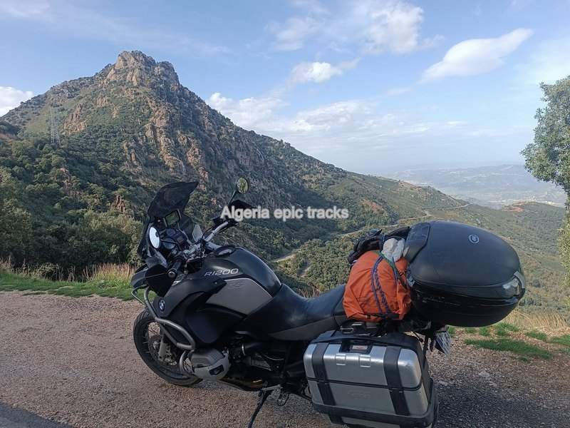
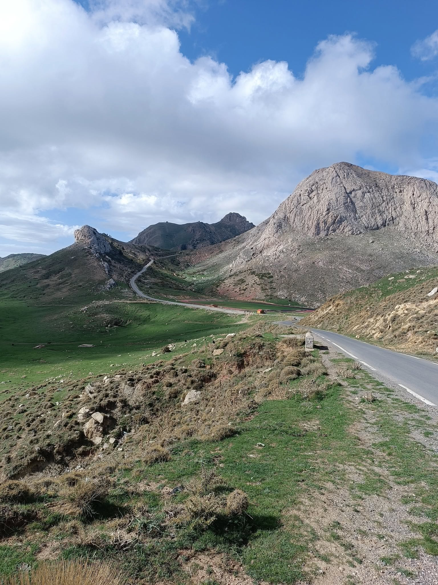
| Au départ de Béjaia, hors vol | Avec moto | Avec votre moto | Passager ou 4×4 |
|---|---|---|---|
| 4 jours | 1 000 € | 600 € | 400 € |
| Compris dans l'offre | Non compris |
|---|---|
| Prise en charge à l'arrivée et au départ et transferts | Assurances annulation et rapatriement |
| Location de moto avec assurance RC (option avec moto) | Assurance dommages moto |
| Véhicule d'assistance, transport des bagages, guide et mécanicien | Frais de visa et vols internationaux |
| Pension complète pendant le circuit | Carburant, boissons, pourboires et visites éventuelles |
Nous quittons la côte de Béjaia pour nous engager en altitude à travers la route ponctuée d'oliviers, de jardins, de vergers et de villages accrochés aux versants. La route prend alors un caractère de plus en plus sinueux à l'approche de Toudja.
La route passe à proximité des ruines d'un aqueduc romain alimentant autrefois la ville de Béjaia.
Nous traversons ensuite la magnifique forêt d'Akfadou, réputée pour ses beaux peuplements de chênes zéens et afarès, ou nous pourrons faire une pause au bord d'un lac à 1270 mètres d'altitude.
Nous poursuivons par une belle route ou nous pourrons apercevoir des ruines de maisons forestières et passons un col à 1300 mètres.
Nous traversons la forêt de Beni Ghorbi, puis une route aux pentes garnies d'oliviers et de villages pour arriver à Ain El Hammam, notre première étape.
Diner et nuit dans un gîte traditionnel à Ain El Hammam.
Nous roulons sur une crête dominant de part et d'autre des vallées fortement encaissées avec vue sur les majestueux sommets de la face nord du Djurdjura.
La route poursuit sa descente pittoresque dans la vallée de l'oued Djemaa puis remonte l'autre versant pour accéder aux villages des Ait Yenni, connus pour leur savoir-faire ancestral dans la fabrication des bijoux kabyles en argent.
Visite des villages des Ait Yenni.
On continue de descendre sur la rive droite d'une vallée pittoresque aux vues très étendues sur le Djurdjura.
Nous coutournons le lac de retenue de Taksebt pour rouler sur une grande arête dorsale qui domine les vallées des oued Aissi et Djemaa et longent les nombreux villages kabyles perchés.
Retour et nuit au gîte de Ain El Hammam.
Cette journée va nous amener sur la route la plus vertigineuse de Kabylie.
La route monte en lacets la face nord du Djurdjura puissamment entaillé par les ravins et franchit la ligne de crête à 1400 mètres d'altitude.
Nous suivons ensuite l'arête rocheuse du Ras Timedouine à plus de 1800 mètres d'altitude, jalonée de multiples points de vues.
Nous rejoignons la plaine de Boghni par de multiples petites routes dans des collines verdoyantes puis nous nous dirigeons vers la charmante ville cotière de Dellys, notre destination de l'étape.
Diner et nuit à Dellys
Visite de la casbah de Dellys et du musée.
La route longe la côte en offrant de jolies vues sur la mer. Des plages, des oliviers, des figuiers jalonnent le trajet avant d'atteindre la forêt de Mizrana dont la végétation descend jusqu'à la mer.
Visite des petites ruines romaines de Tigzirt, dont le site du port a été occupé dès l'Antiquité.
Par la suite la route domine le rivage d'une centaine de mètres , puis déroule ses sinuosités entre des figuiers et des oliviers en s'approchant de Béjaia.
Courte promenade à la presqu'île de Cap Carbon pour suivre le magnifique sentier du littoral accroché à flanc de falaise.
Diner et nuit à Béjaia.
Un circuit de 7 jours entre les reliefs des Aurès et les paysages sahariens. Le détail de l'itinéraire et du budget sera publié prochainement.
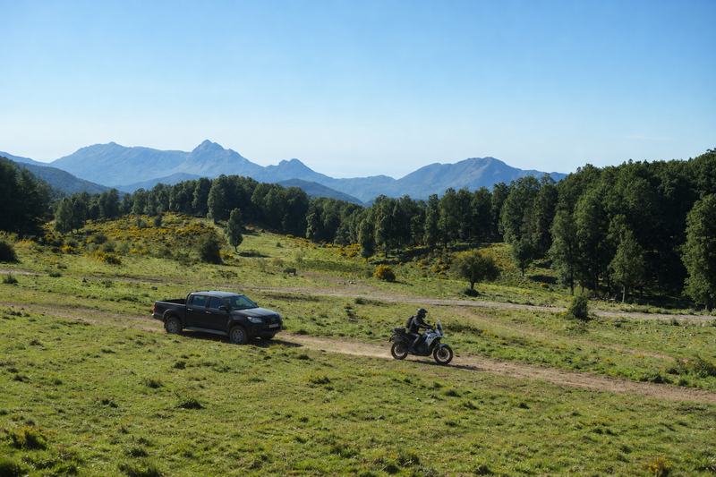
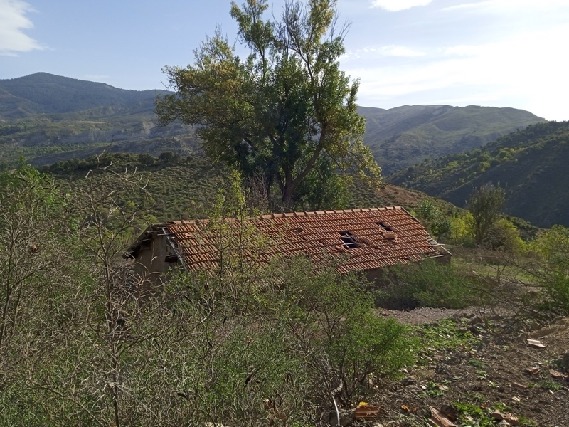
| Au départ de Jijel, hors vol | Avec moto | Avec votre moto | Passager ou 4×4 |
|---|---|---|---|
| 2 jours | 500 € | 300 € | 200 € |
| Compris dans l'offre | Non compris |
|---|---|
| Prise en charge à l'arrivée et au départ et transferts | Assurances annulation et rapatriement |
| Location de moto avec assurance RC (option avec moto) | Assurance dommages moto |
| Véhicule d'assistance, transport des bagages, guide et mécanicien | Frais de visa et vols internationaux |
| Pension complète pendant le circuit | Carburant, boissons, pourboires et visites éventuelles |
Nous quittons la cote jijelienne pour nous enfoncer dans le massif des Babors à travers des petites routes et pistes sinueuses.
Toute une paysannerie dense et active s'accroche à ses terres dans cet environnement pentu et enclavé ou chênes, oliviers, noyers poussent sur les flancs des montagnes couvertes d'une luxuriante végétation.
Nous empruntons une piste qui s'eleve sous l'epais ombrage des chênes séculaires et des majestueux noyers, puis arrivons à un col à 1300 mètres d'altitude ou parfois des bandes de singes magots, espèce endémique d'Afrique du Nord, gambadent dans la forêt.
Pour ceux qui le souhaitent, nous pouvons faire un court aller-retour par une piste pentue et caillouteuse qui monte au sommet à 1540 mètres pour bénéficier d'un panorama grandiose sur la vallée de l'oued Djendjene et les montagnes environnantes
Nous longeons le lac d'Erraguene en contrebas, magnifique lac de retenue, situé à 700 mètres d'altitude, puis empruntons une ancienne piste d'altitude qui suit les contreforts du jbel Tababor jusqu'à notre première étape.
Diner et nuit dans un gîte de montagne au coeur des Babors.
Nous quittons notre gîte par une longue piste pour rejoindre la route de Kherrata.
Nous traversons les majestueuses gorges de Chabet El Akra (le ravin de la mort), récemment réhabilitées. Dans ces gorges, d'une longeur de 7 kilomètres, la route est presque constamment suspendue sur l'abîme, tantôt creusée dans le flanc de la montagne, tantôt jetée sur des arches audacieuses.
Après avoir suivi une route sinueuse en hauteur de la vallée de l'oued Agrioun et ponctuée de villages nous débouchons sur la mer.
Sur plusieurs kilomètres nous suivons cette route en bord de mer qui a été entaillée dans les flancs de la montagne offrant un paysage unique.
Diner et nuit dans une ferme de la campagne jijelienne.
Une question sur nos circuits moto et 4x4 en Algérie ? Écrivez-nous !